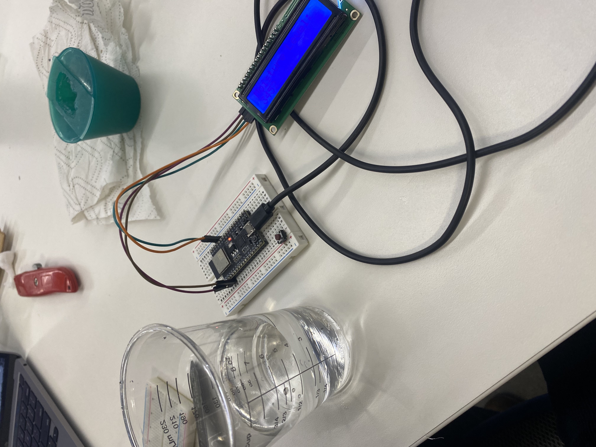

<h1 style= "text-align: center;">
Week 9: Radio, Wifi, Bluetooth (IoT) </b></h1>
This week's assignment is to work with a partner and program one or more microcontroller(s) to obtain and respond to information from the internet or radio. Our project should include at least one input and one output.
<h2 style= "text-align: center;">
Part 1: Moisture Sensor </b></h2>
For this week's assignment, I worked with Kevin to make a dirt moisture sensor for plants. We used two ESP32 Dev boards, a capacitive soil moisture sensor and an OLED display.
We connected one computer to the capacitive soil moisture sensor with the ESP32 and another computer to the OLED display with the ESP32.
We had to download a few libraries but then the coding was pretty straight forward (with some help from ChatGPT) and our sensor worked! A next step we could take is callibrating our moisture sensor. For now, the lower the number on the screen, the more moisture there is. We tested this by putting the moisture sensor in a cup of water.
Here's an image of the display part of our moisture sensor (the screen isn't very bright so it's hard to see but it says Moisture Level and then displays a number under it):
<div class="image-container" style="margin-bottom: 20px; ; text-align: center;">

</div>
Here is my half of the code (for OLED display) and receiving data from the other ESP32:
<pre>
<code class="arduino">
#include <Wire.h>
#include <LiquidCrystal_I2C.h>
#include <WiFi.h>
#include <HTTPClient.h>
const char* ssid = "MAKERSPACE";
const char* password = "12345678";
const char* serverName = "http://192.168.0.112/moisture";
// Set the LCD address to 0x27 for a 20 chars and 4 line display
LiquidCrystal_I2C lcd(0x27, 20, 4);
void setup() {
Serial.begin(115200);
// Initialize the LCD.
lcd.init();
// Turn on the backlight.
lcd.backlight();
// Connect to Wi-Fi
WiFi.begin(ssid, password);
while (WiFi.status() != WL_CONNECTED) {
delay(1000);
Serial.println("Connecting to WiFi...");
}
Serial.println("Connected to WiFi");
}
void loop() {
// Check WiFi connection
if(WiFi.status() == WL_CONNECTED){
HTTPClient http;
http.begin(serverName);
int httpResponseCode = http.GET();
if(httpResponseCode>0){
String payload = http.getString();
lcd.clear();
lcd.setCursor(0,0);
lcd.print("Moisture Level:");
lcd.setCursor(0,1);
lcd.print(payload);
}
else{
Serial.print("Error code: ");
Serial.println(httpResponseCode);
}
http.end();
}
else{
Serial.println("WiFi Disconnected");
lcd.clear();
lcd.setCursor(0,0);
lcd.print("WiFi Disconnected");
}
delay(2000); // Send request every 2 seconds
}
</code>
</pre>